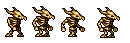
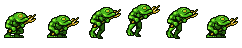
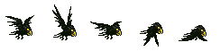
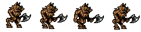
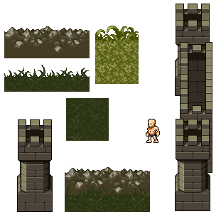
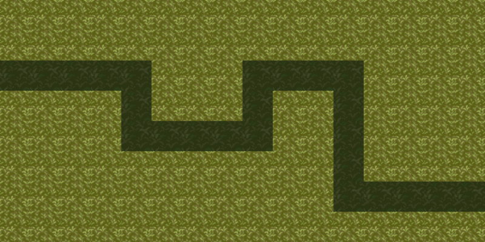
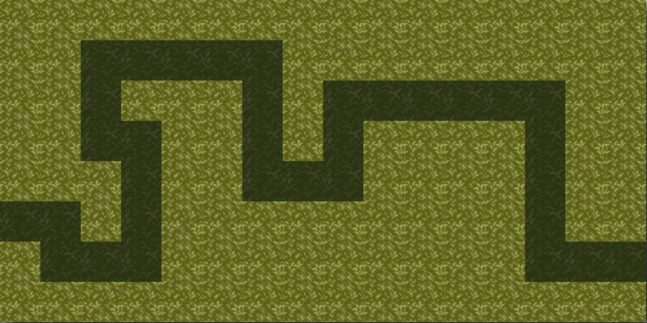

Mockup de votre projet
Par Benjamin, Hugo & Daniel, le 01/04/2022
Ennemis :
Nous avons trouvé une série d'images de monstres :
- Ennemi de base, qui serait utilisé dans la plupart de nos niveaux. 
- Ennemi peu resistant mais rapide. 
- Ennemi aérien qui serait attaquable que par certaines tourelles. 
- Ennemi très lent mais bien plus puissant et résistant. 
Tuiles :
Nous nous sommes basés sur cette tuile afin de construire notre canvas. Sur la gauche, nous avons aussi 2 couleurs de sol, que nous utiliserons pour le chemin chemin sur lesquels les monstrent iront, ainsi que le sol normal.
Maps :
Exemple de cartes que nous avons crééss avec notre canvas, les zones foncées étant le chemin :
